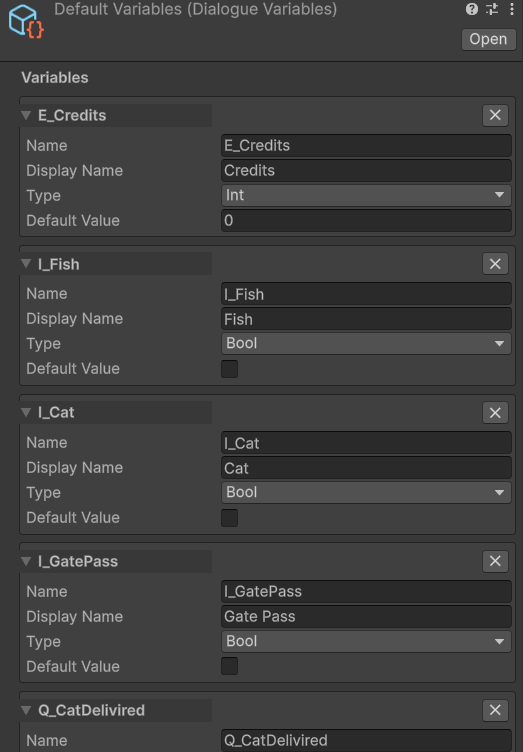

Variables
The built-in variable store lets designers read and write game state directly from the graph — no C# required. Variables live in a DialogueVariables ScriptableObject asset. Choice conditions check them, NPC nodes and Set Variable nodes mutate them, and text tokens embed their values into dialogue lines.
The DialogueVariables asset
A DialogueVariables asset is a ScriptableObject that holds a named list of typed variables. Create one per logical domain (quests, economy, flags, etc.) or one for the whole project — your choice.
Create one: right-click in the Project window → Create → Threader → Variables Store.
Each variable in the list has:
| Field | Description |
|---|---|
| Name | The key used everywhere — in the graph dropdown, in {token} substitution, and in code. Case-sensitive. |
| Display Name | Optional human-readable label used by {varName:name} token substitution. If blank, falls back to Name. |
| Type | Bool / Int / String |
| Bool Value | Default value when Type = Bool |
| Int Value | Default value when Type = Int |
| String Value | Default value when Type = String |
All three value fields (Bool, Int, String) are always visible. Only the field matching the selected Type is used at runtime — the others are ignored.

Runtime behaviour
The asset stores design-time defaults in its serialized fields. At runtime, InitRuntime() copies those defaults into in-memory dictionaries (Dictionary<string, bool>, Dictionary<string, int>, Dictionary<string, string>). All reads and writes during a play session hit those dictionaries — the asset on disk is never modified at runtime.
InitRuntime() is called automatically on first access (EnsureInit()). In Play mode, OnDisable() on the ScriptableObject clears the runtime state so that stopping Play mode always resets variables back to design-time defaults.
This means:
- Variables start fresh every Play session (from the Inspector defaults)
- If you need to persist variables across sessions, save them yourself — see Saving
- If you need to reset variables mid-session (e.g. starting a new game), call vars.InitRuntime()
Assigning to DialogueManager
Select your DialogueManager GameObject in the scene and drag your DialogueVariables asset(s) into the Variables List slot.
You can assign multiple assets — the runner searches all of them in order when resolving a variable name. This lets you split variables logically:
GameVariables.asset — foundCat, questState, playerName
EconomyVariables.asset — gold, price, credits
When the runner looks up gold, it checks GameVariables first, then EconomyVariables. The first asset that contains gold wins.
Reading and writing variables from the graph
Inline conditions on Player Choice nodes
Open a Player Choice node. Inside each choice card is a Conditions box with a + Add button. Each row compares one variable against a value:
| Field | Description |
|---|---|
| Variable | Dropdown populated from all assigned DialogueVariables assets |
| Operator | Equal / NotEqual / GreaterThan / GreaterOrEqual / LessThan / LessOrEqual |
| Value | true/false for Bool; a number for Int; any string for String |
| Hide | Checked = hide this choice entirely when the condition fails. Unchecked = show greyed-out. |
| NOT | Inverts this row's result |
All rows must pass (AND logic). There is no built-in OR — split into separate choice cards instead.
Set actions on NPC nodes
Open any NPC node → Set Vars section → + Add:
| Operator | Bool | Int | String |
|---|---|---|---|
| Set | var = value |
var = value |
var = value |
| Add | (n/a) | var += value |
(n/a) |
| Subtract | (n/a) | var -= value |
(n/a) |
| Toggle | var = !var |
(n/a) | (n/a) |
Set actions fire before events do, so the next Player Choice node in the same conversation already sees the updated value.
Set Variable Node
Use a Set Variable Node [V] when you need to write variables without showing any NPC dialogue. It applies all its actions silently and advances to the next connected node. Useful for:
- Setting a flag at the start of a branch before any lines play
- Resetting a counter in a loop
- Marking story progress at a dead-end branch with no reply text needed
Variable substitution in text
You can embed variable values directly in any NPC line or Player Choice text using curly-brace tokens. The runner resolves them at display time, so a variable changed by an NPC node's Set action earlier in the same conversation is already reflected.
Syntax
| Token | What it produces |
|---|---|
{varName} |
The current value — the number, true/false, or string |
{varName:name} |
The variable's Display Name (falls back to Name if Display Name is blank) |
Examples
"You found {catCount} cats!"
→ "You found 3 cats!"
"You have {E_Credits} {E_Credits:name}."
→ "You have 42 Credits."
"Nice to meet you, {playerName}!"
→ "Nice to meet you, Alex!"
"Pay {price} {price:name}?" ← in a choice button
→ "Pay 50 Gold?"
How it works
The resolver scans each variable asset in the VariablesList order, finds the first asset that contains varName, then returns:
- Bool:
"true"or"false"(lowercase) - Int: the integer as a string
- String: the string value directly
If no variable with that name is found, the token is left as-is (e.g. {typo}) — this acts as an authoring hint so you can spot mistyped names immediately.
Tokens are case-sensitive and must exactly match the variable's Name field.
Original data is never mutated
The resolver creates a new display copy of each NPCLine and ChoiceData before firing OnNPCLine and OnChoiceNode. The source objects on the ScriptableObject asset are never touched, so your token text remains intact in the graph editor after a play session.
Reading and writing from C# code
// Get the Variables asset(s) from the manager
var vars = DialogueManager.Instance.VariablesList[0];
// Read
bool found = vars.GetBool("foundCat");
int gold = vars.GetInt("gold");
string name = vars.GetString("playerName");
// Write
vars.SetBool("foundCat", true);
vars.SetInt("gold", gold - 50);
vars.SetString("playerName", "Alex");
// Read with display name
string displayName = vars.GetDisplayName("E_Credits"); // "Credits" or "E_Credits" if blank
// Reset all variables to design-time defaults
vars.InitRuntime();
// Reset every assigned Variables asset
foreach (var v in DialogueManager.Instance.VariablesList)
v.InitRuntime();
You can call these at any time — before starting dialogue, mid-session from a game system, or during loading.
Naming conventions
Variable names are free-form strings but some conventions prevent common bugs:
- camelCase works well:
foundCat,playerGold,questPhase - Prefix by system if you have many:
E_Credits,Q_VillagerQuest,F_FirstMeeting - Avoid spaces — they work but make
{token}substitution harder to read - Never rename a variable after you've referenced it in the graph — the graph stores the name as a string; renaming breaks all references silently
Full walkthrough example
"The player should only see 'Take the cat' after they've visited the cat's location."
Step 1 — Variables asset:
foundCat Bool false
Step 2 — NPC node "The cat is over there!":
Set Vars: foundCat | Set | true
Step 3 — Player Choice node, choice "Take the cat":
Conditions: + Add
Variable = foundCat
Operator = Equal
Value = true
Hide = ✓ ← hide entirely until the condition is met
Result: "Take the cat" is invisible on first visit. After the player reaches the NPC node that sets foundCat = true, the choice appears automatically on the next visit.
Multiple variable assets — search order
When you assign multiple assets to DialogueManager → Variables List, lookups search each asset in the order they appear in the list. The first asset containing the variable name is used.
This means you can have the same variable name in two assets — only the one that appears first in the list will ever be found. Use distinct names across assets to avoid confusion.